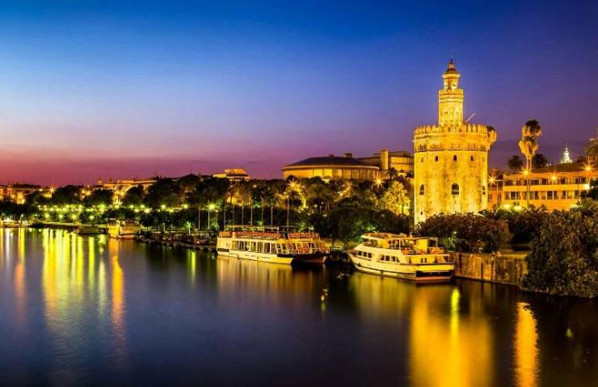
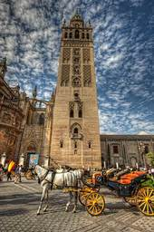

Севилья
Вне сомнений, Севилья (Sevilla) - один из наикрасивейших городов Европы, столица Андалусии. Каждый год сюда съезжаются сотни тысяч туристов, чтобы полюбоваться необыкновенной архитектурой, пройтись по легендарным местам или принять участие во всемирно известных традиционных зажигательных праздниках, которые никого не оставят равнодушным.
История
Согласно легенде Севилью основал античный герой Геракл. Жители города по сей день верят в это древнее предание, поэтому изображение легендарного героя служит украшением аркады Аюнтаменто и улицы Аламеда де Геркулес, которая была построена в его честь.
Согласно сохранившимся источникам в древности на территории современной Севильи располагалось небольшое поселение иберов, а немногим позже здесь находилась колония Испалис, принадлежавшая финикийцам. Примерно в III в. до н. э. этот город завоевали римляне, которые прозвали его Бетика. Существует мнение, что именно в Севилье, а вернее в древней Бетике, появились на свет известные римские императоры Адриан, Траян и Марк Аврелий. После падения господства Римской Империи Севилья в течение некоторого времени являлась столицей вестготов, о чем свидетельствуют сохранившиеся до наших дней Развалины Италики.
В 712 году Севилья была завоеван арабами, которые правили им пять столетий. Это наложило неизгладимый след на архитектуру города и культуру его местных жителей.
Севилья - это элегантные здания и булыжные мостовые, старинные уличные фонари и конные экипажи, зажигательные ритмы фламенко и целых три объекта Всемирного наследия ЮНЕСКО. Здесь можно увидеть достопримечательности, которые точно произведут впечатление! Например, Севильский собор - одна из крупнейших готических церквей в мире с величественной башней, которая когда-то была минаретом древней мечети. Или мавританский дворец Алькасар с роскошным декором в стиле мудехар и красивыми садами. Но главное очарование этого города скрыто в небольших двориках и извилистых аллеях средневекового Баррио-Санта-Крус.